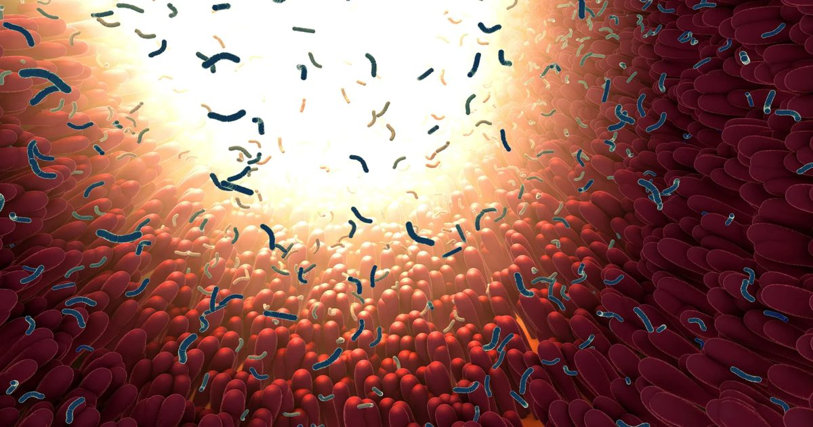

Принимаете антибиотики? Сахар может усугубить ущерб
Употребление большего количества сахара во время приема антибиотиков было связано с большим нарушением микробиома кишечника и увеличением роста потенциально вредных бактерий.
Исследователи говорят, что временное сокращение потребления сладостей во время и после лечения антибиотиками может быть простым способом уменьшить этот ущерб, хотя клинические испытания все еще необходимы.